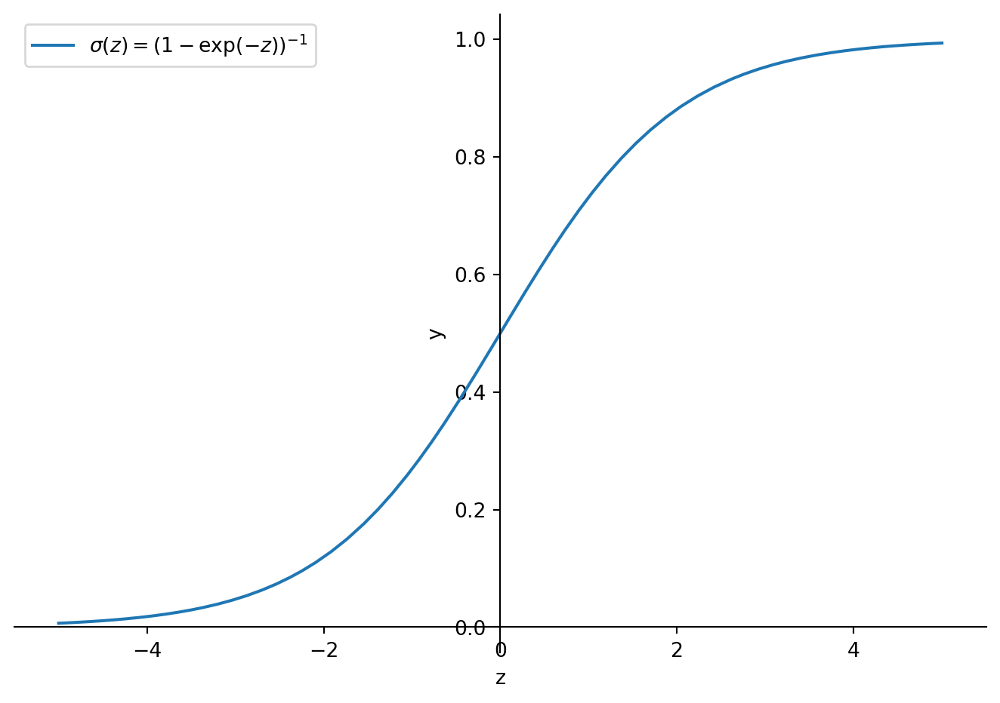
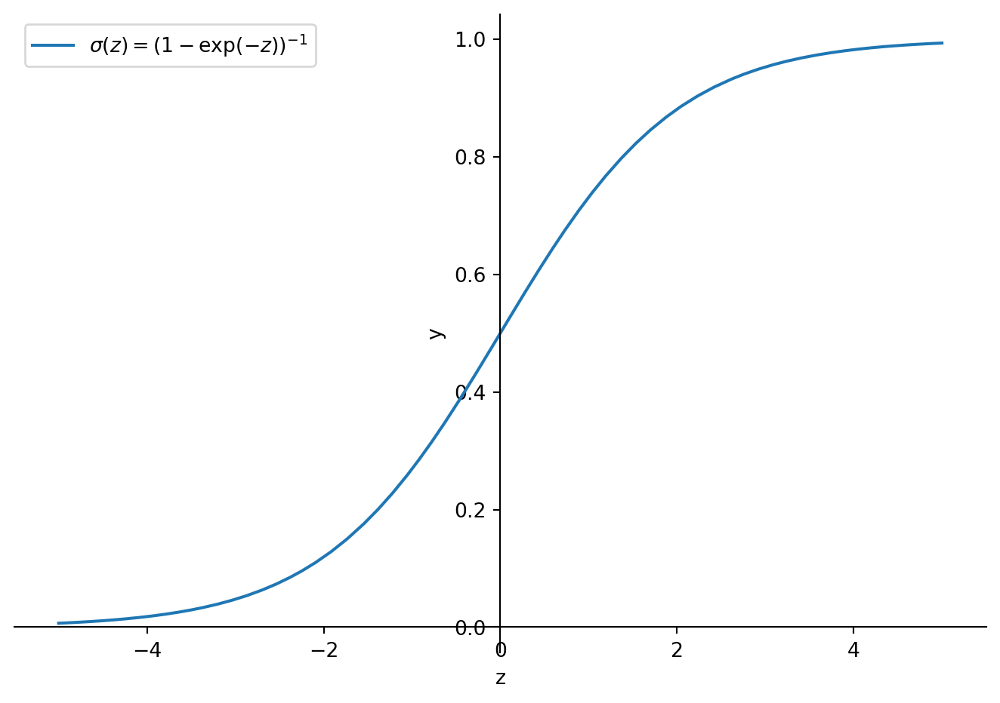

from sympy import symbols, exp, plot_parametric
from sympy.plotting import plot
z = symbols("z")
p = plot_parametric((z,1/(1+exp((-z)))), (z,-5,5), label = r'$\sigma(z) =(1-\exp(-z))^{-1}$', legend = True, xlabel = "z", ylabel="y")
June 3, 2025
The presented content is primarily based on a paper by Catherine F. Higham and Desmond J. Higham (Higham and Higham 2018), which presents a concise introduction to neural networks addressed at applied mathematicians.
An artificial NN consists of several layers. We denote the number of layers \(L\). Each layer consists of neurons. We write \(n_l\) for the number of neurons in layer \(l\in \{1,\dots,L\}\). The “state” of a neuron is given by its activation, which is a real number between \(0\) and \(1\). We denote the activation of neuron \(i\in \{1,\dots, n_l\}\) in layer \(l\) with \(a^{[l]}_i\in [0,1]\). How is the activation of a neuron determined? Given some input \(z\in\mathbb{R}\) we can feed \(z\) into a function \(\sigma\) that maps \(z\) to a number between 0 and 1. Traditionally a popular choice for \(\sigma\) has been \[\sigma(z)=(1+\exp(-z))^{-1},\] which has some desireable properties:
its derivative is easy to calculate as we have \[\sigma'(z)=\sigma(z)(1-\sigma(z))\]
and it is strictly increasing in \(z\) and its first derivative is largest at \(0\).
from sympy import symbols, exp, plot_parametric
from sympy.plotting import plot
z = symbols("z")
p = plot_parametric((z,1/(1+exp((-z)))), (z,-5,5), label = r'$\sigma(z) =(1-\exp(-z))^{-1}$', legend = True, xlabel = "z", ylabel="y")
Now, let \(l\in\{1,\dots,L-1\}\) and assume we feed an observation into the neural network. We consider how the layers \(l\) and \(l+1\) of a NN are interconnected. The \(i\)th neuron in layer \(l+1\) is “wired” with every neuron of the previous layer, i.e. it takes the activations \(a^{[l]}_1,\dots, a^{[l]}_{n_l}\) as input. Then a weighted sum \[\sum_{j=1}^{n_l}w^{[l+1]}_{ij}a_j^{[l]}\] of these inputs is calculated to which we add a bias \(b_i^{[l]}\). We write \[z_j^{[l+1]}=\sum_{j=1}^{n_l}w^{[l+1]}_{ij}a_j^{[l]}+b_i^{[l+1]}\] for \(l\in\{1,\dots,L-1\}\). To determine the activation of the neuron we calculate \(\sigma(z_j^{[l]})\in[0,1]\), which gives us \(a_j^{[l]}\) . We do this for every neuron in layer \(l\). Hence, we can collect the weights into a \(n_{l+1}\times n_l\) matrix \(W^{[l+1]}\). The shape stems from the fact that (a) the input each neuron takes are \(n_l\) real numbers between 0 and 1 and (b) we have \(n_{l+1}\) neurons in layer \(l+1\) that accept these inputs. Analogously we write \(b^{[l+1]}\in\mathbb{R}^{n_{l+1}}\) for the vector of biases. The entry \(w^{[l+1]}_{ij}\) determines how much neuron \(j\) in layer \(l\) influences neuron \(i\) in layer \(l+1\). We write \[z^{[l+1]}=W^{[l+1]}a^{[l]}+b^{[l]}\] and
\[a^{[l+1]}=\sigma(z^{[l+1]})=(\sigma(z_j^{[l]}))_{j=1,\dots,n_l}\] for the activations in layer \(l\)
There are two distinct layers, the first and the last one. The first layer aka the initial layer is fed with observed data. The final layer is the layer that gives us predictions. Let us consider the standard example of classifying hand-written digits. We assume that we have grey-scale pictures as input. Each pixel’s coloring can be represented by a number between 0 and 1. The number of pixels of each picture gives us the number of neurons \(n_1\) in the first layer. The intitial layer neurons’ activations are given by its grey scale value. We want the final layer to predict which digit was on the image fed into the NN. Hence, we have \(n_L=10\), where each neuron represents a digit. Our prediction is given by the neuron with the highest activation.
We can interpret a NN as a function \[F:\mathbb{R}^{n_1}\rightarrow\mathbb{R}^{n_L},\] which takes vectors \((x_1,\dots,x_{n_1})\) as input and puts out a vector of activations \((a^{[L]}_1,\dots,a^{[L]}_{n_L})\). The function \(F\) itself is determined by the weights and biases on each layer.
Let us consider a neural network with 4 layers and \(n_1=2, n_2=2, n_3=3, n_4=2\). Then \(W^{[2]}\) is a \(2\times 2\) , \(W^{[3]}\) a \(3\times 2\) and \(W^{[4]}\) a \(2\times 3\) matrix. Thus, we have 16 weights. Additionally, we have \(2+3+2=7\) biases. Hence, by choosing \(16+7=23\) parameters we define a function \(F:\mathbb{R}^2\rightarrow \mathbb{R}^2.\) Training this NN basically means adjusting these 23 parameters such that a cost function is minimized. It is already somewhat clear that it’s not gonna be an easy task to find optimal even for this baby NN.
To sum up this paragraph we provide pseudo-code that describes how an observation \(x\in\mathbb{R}^{n_1}\) is processed by the NN:
a = x
for k in 2 to L:
z = W_k*a + b_k
a = sigma(z)Let us assume we want to classify observations into categories based on \(n_1\) observable characteristics. Let \(N\) be the number of observations in our labeled training data. Let’s assume we have already chosen weights and biases within our NN. Then, we can feed the observations into the calibrated NN. For every observation \(x^{\{i\}}\) the NN puts out an \(n_L\) dimensional vector representing the activations of the neurons in the final layer. As mentioned before, each neuron in the final layer represents a category. For every observation we know its category. Let us assume observation \(i\) belongs to category \(j\in\{1,\dots,n_L\}\). In an ideal world our NN’s output is \(F(x^{\{i\}})=\delta_{ij}\) (Kronecker-delta), i.e. the activation of neuron \(j\) is 1, whilst the activations of the other neurons are 0. We can quantify our NNs deviation form the perfect classifier by calculating \[C_i=\frac{1}{2}||y^{\{i\}}-F(x^{\{i\}})||_2^2\] for each \(i\in \{1,\dots,N\}\) and computing \[N^{-1}\sum_{i=1}^N C_i.\] This defines our cost function. As this sum depends on the underlying parameters of \(F\), which we denote (for the sake of compactness) with \(p\), we can write \[Cost(p)=N^{-1}\sum_{i=1}^N C_i(p).\] Our objective is to find parameters \(p\) such that this sum is minimal.
We continue the pseudo-code example:
Cost = 0
for i in 1 to N:
a = x _i
y = y_i
# feed observation to neural net
for k in 2 to L:
z = W_k*a + b_k
a = sigma(z)
C_i = 0.5 * sqrt((y[1]-a[1])^2+...+(y[n_L]-a[n_l])^2
Cost = Cost + (1/N) *C_iLet us assume we have started with an initial calibration of our NN. The calibration is given by the parameter vector \(p\in\mathbb{R}^s\). Based on this we have calculated \(Cost(p)\). Now, we try to change the parameters by \(\Delta p\) such that \(Cost(p+\Delta p)< Cost(p)\). Geometrically speaking, we want to find the fastest way downhill in a \(s+1\) dimensional mountain range. From multivariate calculus we know that \[Cost(p+\Delta p)\approx Cost(p)+(\nabla Cost(p),\Delta p)_2\] close to \(p\) (first-order Taylor approximation). One might also recall that \(\nabla Cost(p)\) gives us the direction of the steepest ascent. Hence, we decide to go into the opposite direction, i.e. we choose \(\Delta p=-\nabla Cost(p)\). As the Taylor formula gives only valid approximations close to \(p\) we should not walk to far, i.e. we fix a scalar \(\eta\) that we premultiply \(\Delta p\) with. Hence, we update \(p\) as follows: \[p\rightarrow p-\eta \nabla Cost(p)\] We do this until a stopping criterion is met.
Remember that \[Cost(p)=N^{-1}\sum_{i=1}^N C_i(p).\] Hence, \[\nabla Cost(p)=N^{-1}\sum_{i=1}^N \nabla C_i(p).\] To calculate \(\nabla Cost(p)\) once we have to calculate \(s\) (remember that \(p\in\mathbb{R}^s\)) partial derivatives \(N\) times. We have seen before that \(s\) is large even for a baby NN. Thus, calculationg \(\nabla Cost(p)\) can be computationally costly. Consequently, we might only consider a subset of our training data in determining the next direction we walk to. For the sake of simplicity we pick only one observation \(i\) randomly, calculate \(\nabla C_i(p)\) and walk into this direction. A single step can be summarized as
Choose \(i\in \{1,\dots,N\}\) randomly.
Update \(p\rightarrow p-\eta \nabla C_i(p)\).
We call this the stochastic gradient method. Obviously to base our step only on one observation is not necessarily the most intelligent approach. One often uses mini-batches of the training data to update the parameter vector.
This section seeks a way to calculate \(\nabla C_i(p)\). Let us write \[C=\frac{1}{2}||y-a^{[L]}||_2^2.\] \(C\) is a function of the weights and biases via \(a^{[L]}\). Remember that the levels of activation of the neurons are calculated recursively, i.e. \[a^{[L]}=\sigma(W^{[L]} a^{[L-1]}+b^{[L]})=\sigma (W^{[L]} \sigma(W^{[L-1]} a^{[L-2]}+b^{[L-1]})+b^{[L]})=....\]
Thus, we should spend some time to figure out how to calculate \[\frac{\partial C}{\partial w_{j,k}^{[l]}}\] and \[\frac{\partial C}{\partial b_{j}^{[l]}}\] for \(l\in\{2,\dots,L\}\) and \(j=1,\dots,n_l, k=1,\dots,n_{l-1}\). Above we have defined \[z^{[l]}=W^{[l]}a^{[l-1]}+b^{[l]}\] and \(a^{]l]}=\sigma(z^{[l]})\). We define \[\delta_j^{[l]}=\frac{\partial C}{\partial z_j^{[l]} }\] for \(1\leq j\leq n_l\) and \(2\leq l\leq L\). This measures how sensitive the cost function is to changes to the weighted and biased input of neuron \(j\) in layer \(l\) of the NN. This \(\delta\)’s come in handy, when we try to find concise expressions for the partial derivatives of the cost function with respect to weights and biases.
We have \begin{align}\delta^{[L]}&=\sigma’(z^{[L]})\circ (a^L -y),\\ \delta^{[l]} &=\sigma’(z^{[l]})\circ (W^{[l+1]})^T \delta^{[l+1]}\text{ for }2\leq l\leq L-1\\ \frac{\partial C}{\partial b_j^{[l]}} &= \delta_j^{[l]} \text{ for } 2\leq l\leq L\\ \frac{\partial C}{\partial w_{jk}^{[l]}} &= \delta_j^{[l]}a_k^{[l-1]} \text{ for } 2\leq l\leq L\end{align}, where \(x\circ y=(x_1y_1,\dots,x_ny_n)^T\) is the Hadamard-product.